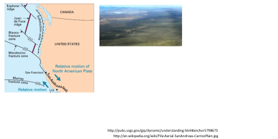
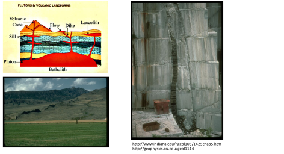
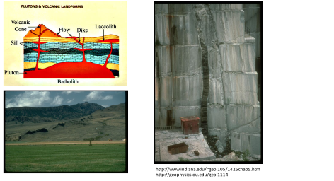

Next: Linear isotropic elasticity Up: Fundamentals of linear elastic Previous: Kinematic equations: displacements and Contents
Constitutive equations tell us how a solid deforms (in time) as a response to stresses, to changes of temperature and to changes of pore pressure among others. How to choose a constitutive equation depends on the material properties, the magnitude of strain changes, the magnitude of stresses, and the loading rate among other factors.
The simplest constitutive relationship for solids is linear elasticity, in which stresses and strains are linearly related by constant coefficients. The examples in Figure 3.9 correspond to applications of linear elasticity in various dimensions:
 [N] required to produce an elongation
[N] required to produce an elongation  [m] in a spring with mechanical constant
[m] in a spring with mechanical constant  [N/m] is
[N/m] is

 and length
and length  . The force required to produce an elongation [m] is inversely proportional to , and proportional to proportional to , and
. The force required to produce an elongation [m] is inversely proportional to , and proportional to proportional to , and  (the stiffness modulus of the solid), such that
(the stiffness modulus of the solid), such that
|  | (3.9) |
 is proportional to the strain tensor
 through the stiffness tensor
is proportional to the strain tensor
 through the stiffness tensor

 |
(3.10) |
![\includegraphics[scale=0.65]{.././Figures/split/4-12.pdf}](img242.svg)
![\includegraphics[scale=0.55]{.././Figures/split/4-13.pdf}](img252.svg)